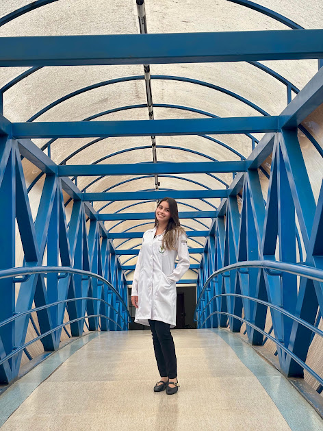

Movimento,cuidado equalidadede vida.
Um atendimento de fisioterapia pensado de forma individual, com atenção, acolhimento e cuidado em cada etapa do seu acompanhamento.
- Atuação
- Pediatria e Gerontologia
- Atendimento
- Londrina e Cambé, PR
- Agendamento
- Pelo WhatsApp

Cuidado que começa pela escuta.
Meu propósito é oferecer um acompanhamento próximo e individualizado, entendendo as necessidades de cada pessoa e buscando evolução com segurança, atenção e respeito ao seu processo.
Fisioterapia com propósito
O atendimento fisioterapêutico vai além do cuidado com o movimento. Cada acompanhamento é uma oportunidade de compreender suas necessidades, estabelecer objetivos e construir um caminho de evolução de forma individualizada.
- Compreender as suas necessidades
- Estabelecer objetivos
- Construir um caminho de evolução, de forma individualizada
“Cuidar do movimento é também cuidar da liberdade de viver melhor.”
Um cuidado pensado para você.
Atendimento fisioterapêutico com atenção às diferentes fases da vida, com atuação voltada à Pediatria e à Gerontologia.
-
Fisioterapia Pediátrica
Cuidado, desenvolvimento e acolhimentoAcompanhamento fisioterapêutico voltado ao público infantil, com cuidado individualizado e atenção às necessidades de cada criança e família.
Conversar no WhatsApp -
Gerontologia
Movimento, autonomia e qualidade de vidaAtendimento fisioterapêutico direcionado à pessoa idosa, buscando favorecer movimento, funcionalidade, autonomia e qualidade de vida.
Conversar no WhatsApp
Atendimento individualizado. Cada acompanhamento considera as necessidades, objetivos e particularidades de cada paciente em sua fase de vida.
Atendimento na sua região.
Entre em contato para consultar disponibilidade, local de atendimento e horários.
Londrina
Paraná. Atendimento mediante agendamento.Cambé
Paraná. Atendimento mediante agendamento.
Vamos cuidar do seu movimento?
Para informações sobre atendimentos e horários, fale diretamente comigo.
Chamar no WhatsApp- (43) 9 9122-1663
- @marianaed5
- Atendimento
- Londrina e Cambé, PR